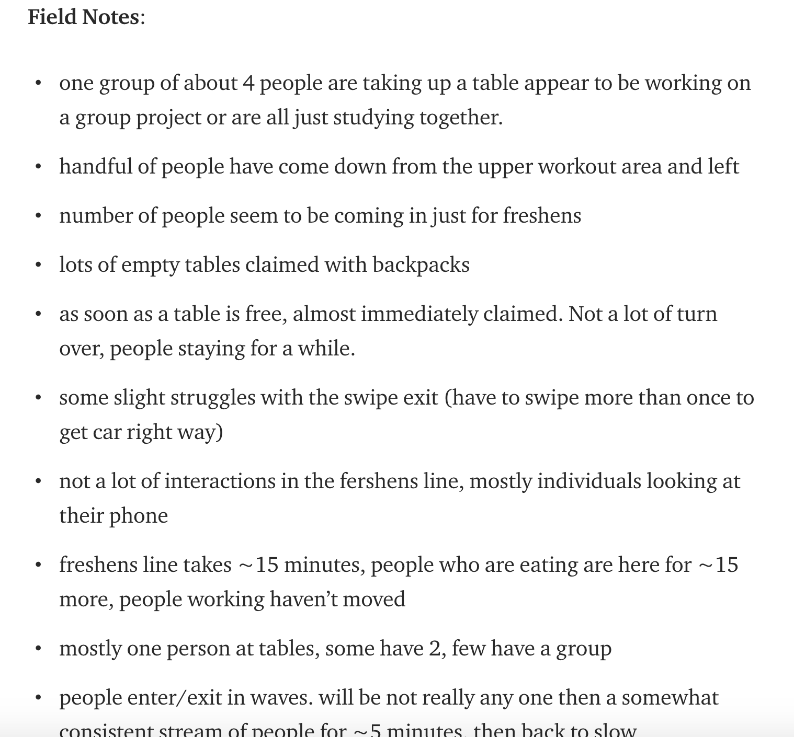
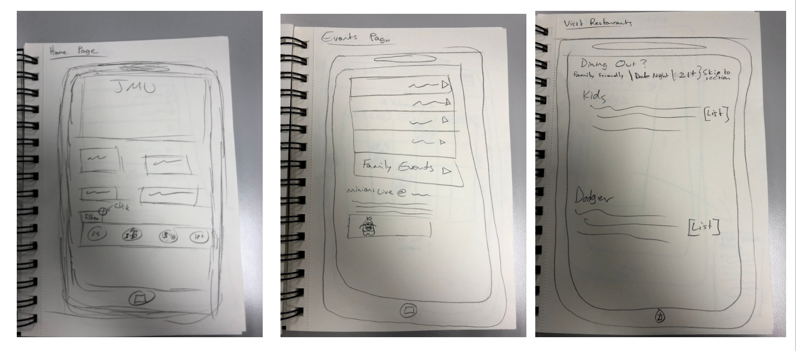

Design Manifesto
I really liked the design process we used, I felt like it really gave us creative freedom to do what we wanted but then also helped us to narrow down broad ideas and improve upon them. Based upon what we did this past semester, my design process would begin with making sure your idea is not only a good one, but a necessary one. The next step would be to really figure out what your idea is and to gather information about your target population, then create a prototype based on that intel. Once created, test it out in various groups made up of your target demographic, gather feedback from them and use it to improve your prototype, repeating this process at least once more before deciding on your “final” version.
The first step of my design process is, once you have an idea, research and talk to friends and coworkers to see if this idea A) hasn’t been done B) makes sense and C) is something that is necessary or needed, not just a great idea that will never be used. I would say this step is the most important part of the process because if you put all of your time and energy into this great idea, but its already been done or has no real need, then you’ve just wasted your time.
Step two is kind of a two part process. The first part is gathering a lot information about a lot of things. To begin with, observe your target demographic in a natural setting. Just sit in a location that is relevant to your idea for at least an hour and take notes on your surroundings. Whats going on, how people are interacting, what are people not doing, and so one. Even writing down things that don’t seem important, because you never know what you may need later on. To the side is an image of some of my observation notes taken while sitting in UREC for about an hour one afternoon. Here is a link to a medium post with the full observations, expanded field notes, and a reflection on the whole process.
One you’ve finishing this, take that information and interview your target demographic. See what ideas they have, things they want to see, things they want to avoid, would the be interested in something like this, what would they not be interested in, etc. Finally, do research on stylistic choices. What colors would appeal to certain audiences, what fonts could turn people away? Figure out what kind of ‘feel’ you’re going for. A great way to do this, and to gather all of this desgin research into one place is by creating a mood board
Part two of step two about figuring out exactly what your idea is and what you want to do with it.
 I found the best way to do this is by making a Work Affinity Activity Diagram using your notes and ideas from brain storming, interviews, observations, and research. I really like doing a WAAD because it helps me figure out what broad ideas I have within this idea and what things fall within these categories. It also helps me to see what things I could be missing, like if I had no security category, that could be problematic. It also allows me to easily group things that we found people want to see, what they don’t want, what would be most aesthetically pleasing, etc.
I found the best way to do this is by making a Work Affinity Activity Diagram using your notes and ideas from brain storming, interviews, observations, and research. I really like doing a WAAD because it helps me figure out what broad ideas I have within this idea and what things fall within these categories. It also helps me to see what things I could be missing, like if I had no security category, that could be problematic. It also allows me to easily group things that we found people want to see, what they don’t want, what would be most aesthetically pleasing, etc.
After creating the Work Affinity Activity Diagram, you have enough information to create a simple prototype. The best way to do this is to just draw it out on paper.
 A simple wire frame prototype allows you to make something simple enough to get the point across, but begin to figure out how you want something to be laid out.
Once you have a simple plan of what you think you want your application to look like, it is crucial to test it out with real people who haven’t been working on it. The reason it’s important to use outside people is because they haven’t become familiar with the ins and outs of how this thing is suppose to flow, and aren’t aware of some potential quirks. An outsider could also provide some new insight regarding something you hadn’t even thought of. To have them actually test it out you should use something called the Wizard of Oz method. Basically, it just means that the person testing out the wireframe application will verbalize their though process and what they want to do so someone “behind the curtain” can make all of that happen, by bringing up different ‘screens’, making different sound effects, or whatever is necessary for the test run to feel somewhat real.
While people are trying out your wireframe prototype, have them verbalize what they’re thinking, if they like how its laid out or if they find something confusing. After you have a few people do it, have a group feedback meeting where everyone is able to express things they liked and didn’t like, what they wish they could change, or what they would like to see in the next iteration. A great, simple way to accomplish this is by having everyone follow the “I like, I wish, What if” format, where individuals express what they like, something they may have wanted to change, and gives a suggestion on how to improve the idea. Then, taking all of these suggestions into account, go back to the drawing board and improve upon your prototype. If you feel like you may still have a long way to go with different interactions and features before you want to make something a little more detailed, then make another wireframe, still keeping it simple and focusing more on the interactions and movement from one thing to another. If there is only minor changes with the flow of the app, then move to a clickable prototype which allows you to make something a little more in depth and detailed, making more stylistic and aesthetic choices.
Once you’ve created your next iteration of your prototype, repeat the process of having groups of people from your target demographic test it out, gathering information from them about what they think of it, and then taking it back to further improve upon and redesign your prototype. I would do this process at least 2 times total, and once you get to making the more detailed clickable prototype, running through it one last time before deciding on a “final” design.
My design process may seem very repetitive and boring at times, but I strongly feel that by following this process, you are able to create the best application that you can. By doing lots of research and gathering information from real people, you’re ensuring that what your doing is relevant and actually impactful to the people you’re making it for. By going through the prototyping and feedback process multiple times you’re doing the same, and making sure that how you’ve envisioned this app actually works and makes sense to others.